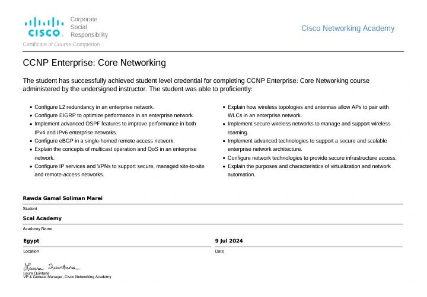

Certification 1
Certificate Name: CCNP Enterprise: Core Networking Certification
Date: Issued Feb 2024 . Expires sep 2024
Description:
I earned the CCNP Enterprise: Core Networking certification from Cisco Networking Academy.
This certification provided me with advanced skills in configuring and managing enterprise networks, including OSPF, EIGRP, and eBGP protocols, as well as secure wireless technologies. I'm excited to apply these skills in future projects.

Download Certificate
Certification 2
Certificate Name: Cisco Certified Network Associate (CCNA) - Enterprise Networking, Security, and Automation (CCNA)
Date: Issued July 2023 . Expires June 2024
Description: I completed the Cisco CCNA v7 course on Enterprise Networking, Security, and Automation. This certification equipped me with the ability to configure and troubleshoot OSPFv2 in both point-to-point and multi-access networks, enhance network security through access control lists (ACLs) and NAT ]
Download Certificate
Certification 3
Certificate Name: Cisco Certified Network Associate (CCNA) - Switching, Routing, and Wireless Essentials
Date: Issued July 2023 . Expires June 2024
Description: I achieved the Cisco CCNA v7 certification in Switching, Routing, and Wireless Essentials. This course provided me with expertise in configuring VLANs, inter-VLAN routing, and troubleshooting on Layer 3 devices. I also developed skills in enhancing network reliability through redundancy protocols, securing

Download Certificate
Certification 4
Certificate Name: Cisco Certified Network Associate (CCNA) - Introduction to Networks
Date: Issued July 2023 . Expires June 2024
Description: I earned the Cisco CCNA v7 certificate in Introduction to Networks, which covers the fundamentals of configuring and managing networks. I gained skills in configuring devices and enabling access to local and remote resources, understanding the protocols that support Ethernet operation in switched networks, configuring IPv4 and IPv6 addressing, implementing security best practices in small networks, and troubleshooting connectivity issues.
Download Certificate
Certification 5
Certificate Name: Cyber Security
Date: Issued Jul 2023
Description: Completed a 120-hour introductory course in Cyber Security, focusing on foundational concepts and principles.

Download Certificate